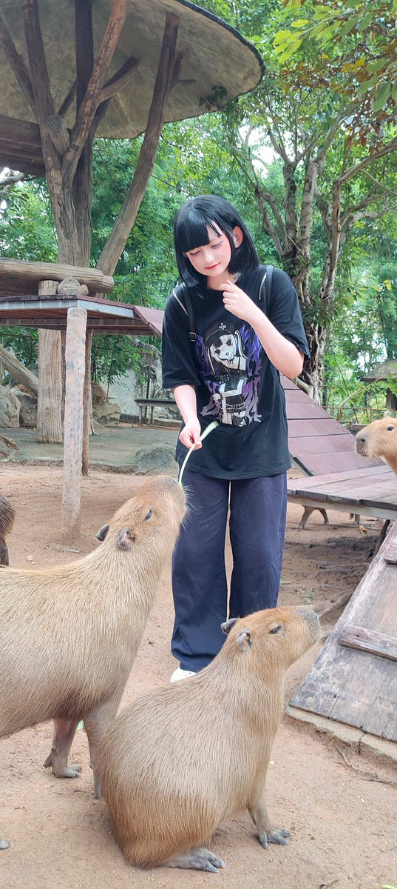

Yun
@yunch529
RT @BearAnimatron1c: 你们好，我是一只AuDHD小熊。我喜欢学习，也喜欢研究各种看似杂乱、实际上很有意思的东西。我喜欢小动物、毛绒玩具、咖啡、音乐、妆容和各种有自己风格的文化，也喜欢创造属于自己的审美。我喜欢转发一些恐怖的东东。#Teddybear http…

Beatrix
@BearAnimatron1c
你们好，我是一只AuDHD小熊。我喜欢学习，也喜欢研究各种看似杂乱、实际上很有意思的东西。我喜欢小动物、毛绒玩具、咖啡、音乐、妆容和各种有自己风格的文化，也喜欢创造属于自己的审美。我喜欢转发一些恐怖的东东。#Teddybear https://t.co/bN21HXy7Vq